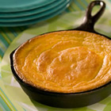

Yummy Thanksgiving Recipes
Real Southern Cornbread
Submitted by: Christoper Robin Photo by: A. A. Milne |
|
| Rating: | |
| Prep time: | 10 minutes |
| Cook time: | 50 minutes |
| Ready in: | 1 hour |
Servings: 8
Ingredients:
Ingredients:
- 2 cups cornmeal
- 2 cups all-purpose flour
- 1/2 teaspoon salt
- 2 tablespoons baking powder
- 2 eggs
- 1 cup margarine, melted
- 4 cups buttermilk
Directions:
- In a large bowl mix together the corn meal, flour, salt, and baking powder.
- In a separate bowl mix together the eggs, butter, and buttermilk. Add to the dry ingredients and stir until well blended.
- Heat a dry 12 inch cast iron skillet over high heat for 2 minutes. Add corn oil to skillet, swirl oil around to coat bottom and sides. Leave remaining oil in pan. Return to high heat for 1 minute.
- Pour the cornbread batter into the skillet and cook on high heat until bubbles start to form in the center. Remove from stove.
- Bake in a preheated 400 degree F (200 degree C) oven for 40 to 50 minutes, or until a knife inserted into the center comes out clean. Serve warm.